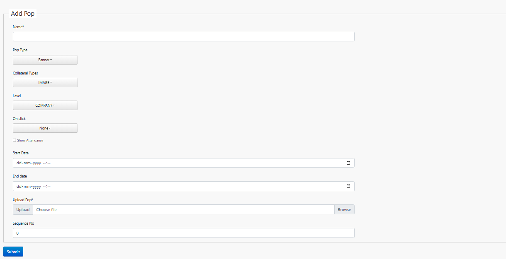
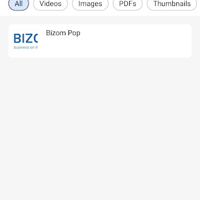
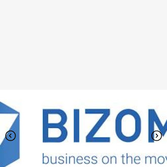

POPs (Point of Purchase / Point of Presence materials) support your sales team with brochures, sale sheets, product visuals or company announcements. They can be:
- An image (TIFF, JPEG, GIF, PNG)
- A PDF
- A hyperlink (web URL)
- A video
1. Adding a POP
To show up in the app, a POP first needs to be uploaded to the Bizom portal. Log in as admin and follow these steps:
Open List Pops
From Products, select List Pops (under the More menu if it's not visible directly), or go to
/pops.Click "Add Pop"
Fill in the pop details
Field What it means Name Name of the pop Collateral Type Image / Video / PDF / Thumbnail / Hyperlink Level Where it applies: Company / Zone / Subzone / Business Unit / Warehouse / Distributor / Area / Outlet / User / Role Zone / User Select the specific zone or user, depending on the level chosen Show Attendance Tick to show this pop before marking attendance (off by default) Start / End Date The date range this pop is shown in the app Upload Pop Choose the file to upload 
Add Pop screen Click Submit
You'll see "The pop has been saved".
NoteExisting pops are listed in the pops table. You can also assign pops in bulk via a generic upload to the popassignees table.
2. Viewing POPs in the app
Pops assigned to a level under your company are viewable in the app, either before or after marking attendance, depending on the Show Attendance setting.
Before you startThe Pops workflow must be enabled for the app user, and the pops themselves must already be uploaded.
After marking attendance
Leave Show Attendance unticked while adding the pop to make it appear only after attendance is marked. Open Pop from the side menu once logged in, every pop uploaded for you is listed there.
Before marking attendance
Tick Show Attendance and the rep is taken straight to the Pops screen on login, before they can mark attendance. Companies often use this to showcase the current month's targets, new product launches, or safety precautions before a rep starts their day.


Was this guide helpful?